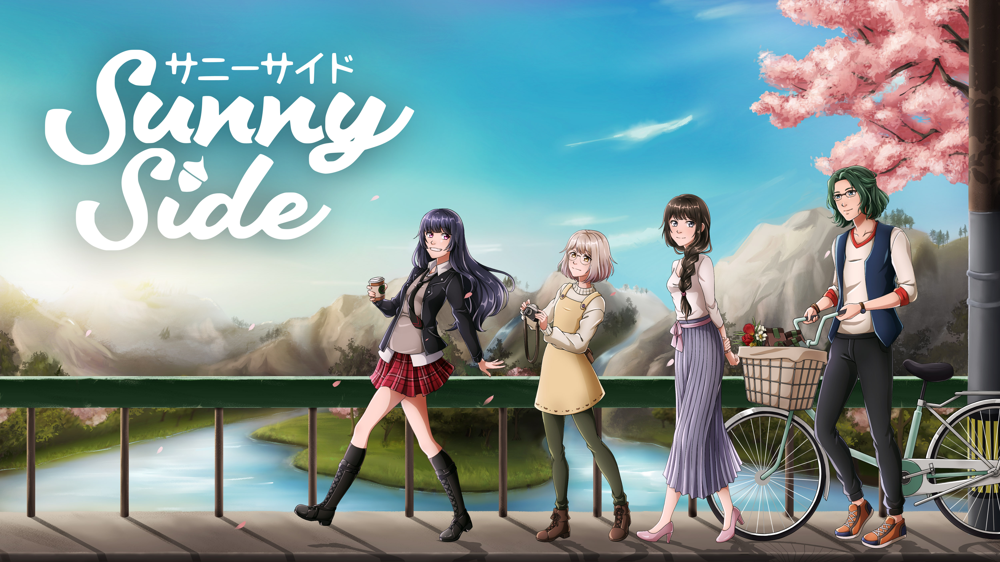

Wishlist the game on Steam!
Find harmony in the Japanese countryside as you help Sparky uncover lost memories in this modern take on the farming and life simulator. Build a thriving homestead, cultivate new relationships, and chase your own happiness in SunnySide.
You’ve just purchased your first plot of land in an aging post town in the heart of the Japanese countryside. Now, it’s up to you to create a homestead you can be proud of.
Master the art of farming
Explore local resources
Build your dream home
Care for your animals
Bond with the locals
Use modern technology to balance time between your new farm life and joining the local community.
Meet new people and learn about their lives
Support their businesses
Hang out around town and in the city
Pursue some romance
With a focus on individuality, SunnySide is full of creative freedom and self-expression.
Create your main character.
Build anything, anywhere, on your own plot of land.
Customize your phone and drone
Move at your own pace and follow your own path. The best way to play is whatever way makes you the most happy!
113 crops to grow
27 Characters to befriend
Hundreds of cooking and foodcraft recipes
A realistic economy
Modernize your farming experience with new technology that brings the classic, farming sim genre to the 21st century. Worry less about tedious daily tasks and enjoy living a life of balance.
Hose watering!
Container and Raised Bed Gardening.
Sustainable energy generation
Drip tape watering systems.
Bulk animal care.
A proper homestead is self sufficient, and your home in SunnySide is no different. Elevate your crops and animal goods into artisanal food craft and sell to local stores to help support the economy.
Master food craft machines including dehydrators, milk separators, cheese kettles, fermentation barrels, canners, and more
Dry your own seeds, tea, and animal feed
Cook up your own artisan tofu
Ferment beer and soy sauce.
Press your own oils
Bottle, jar, and package your goods to sell for a higher price
Sell to local businesses, to shops in the city, or at the Farmer’s Market on weekends
After a thousand year old sassy survey drone named Sparky rescues you from a cave in, you’re tasked with helping this new companion retrieve their lost memories and complete the last mission they remember: learn more about humans.
Help Sparky determine the nature of humans
Join Sparky on a mission towards self discovery
Explore the mysterious caves together and team-up in a cozy card-based battle system
The best part of living in the country is becoming part of a community.
Enjoy unique hang outs with the residents of SunnySide
Listen to their stories and witness their lives
Form bonds, attend events, build a life, and maybe even find someone special to share your days with
While a quiet life in the countryside is nice, SunnySide isn’t perfect. The locals have distinct personalities, histories, motivations, and needs… but their stories are interwoven with each other’s lives. It’s up to you to determine how involved you want to be.
Experience stories from multiple perspectives
See how people’s lives impact each other
Explore complicated themes like family trauma, failed relationships, guilt, blame, aging, and much more
Disclaimer: SunnySide is a Farm Sim with no watering cans, shipping containers, gift based socializing, mayonnaise machines, or endless walking.